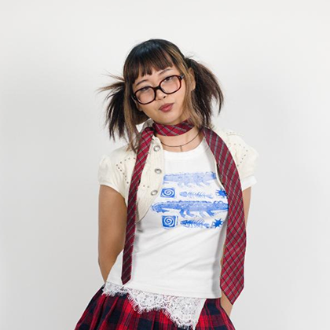

Hi, I am Marianne Ysshi Pineda!
The founder and owner of Pan de Kuko, 21 years of age from Kamuning, Quezon City. As a kid I have always loved painting and making miniatures which have paved the path for this nail business.
I started focusing on making nails because I got burnt out from other mediums. I am the type to always seek for mediums to use and experiment with and making nails has been refreshing for me. So now I make press-on nails for creatives who love fashion and photography.
@marianne.com_ @marianneysshii@gmail.com